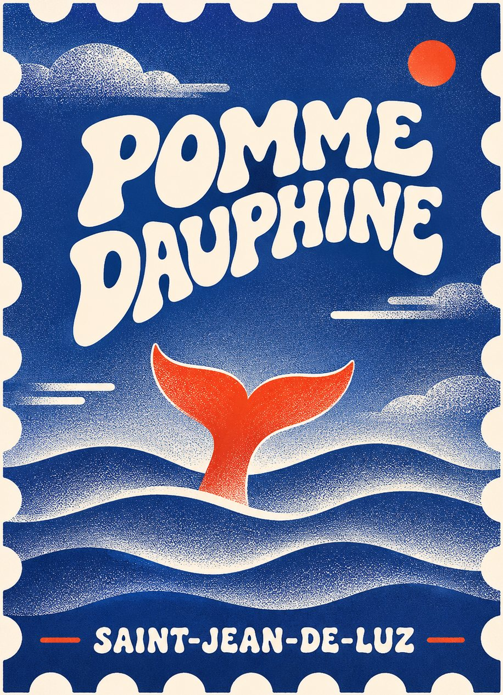

Y a-t-il un dauphin à Saint-Jean-de-Luz ?
Oui. Depuis l'automne 2025, une jeune femelle grand dauphin surnommée Pomme vit dans la baie de Saint-Jean-de-Luz et Ciboure.
Saint-Jean-de-Luz · Ciboure

Le dauphin de Saint-Jean-de-Luz est en fait une dauphine : une jeune femelle grand dauphin qui vit dans la baie de Saint-Jean-de-Luz et Ciboure depuis l'automne 2025. On l'a surnommée Pomme.
Être prévenu du lancementNouvelles de la baie
Mis à jour le
En novembre, un abcès a été repéré sur son flanc droit, juste sous l'aileron. D'après les observations du 16 novembre, il s'est ouvert, ce qui permet à l'infection de s'évacuer. Son comportement ne montre aucun signe d'affaiblissement.
Elle est observée chaque jour par les agents de la ville et par la correspondante du Réseau national échouages, coordonné par l'observatoire Pelagis.
Portrait
Pomme est un grand dauphin (Tursiops truncatus), une espèce emblématique de la côte basque. C'est une jeune femelle de 5 à 8 ans, pas encore adulte. Elle mesure environ 2 mètres et pèse près de 200 kilos.
Arrivée dans la baie à l'automne 2025, elle y vit seule, ce qui est rare chez une espèce qui vit d'ordinaire en groupe. Curieuse, elle s'approche parfois des nageurs, près de la plage.
Depuis le rivage
Pomme évolue dans la baie, entre Saint-Jean-de-Luz et Ciboure, et passe souvent près de la Grande Plage. Le meilleur poste d'observation reste le rivage : depuis la promenade du front de mer, la vue sur la baie est dégagée.
Inutile d'aller à sa rencontre en paddle, en kayak ou à la nage : c'est interdit, et les contacts répétés avec l'homme modifient son comportement sauvage et réduisent ses chances de survie.
La règle d'or
100 m de distance minimum, en toutes circonstances
Le grand dauphin est une espèce protégée, et la baie fait partie d'un espace protégé. L'arrêté ministériel du 1er juillet 2011 interdit de :
L'amende peut atteindre 750 € pour un particulier et 3 500 € pour une entreprise.
Même quand elle vient d'elle-même vers les nageurs, mieux vaut s'écarter : dans l'eau, un dauphin de 200 kilos est bien plus fort et plus rapide que nous. Certaines maladies peuvent aussi se transmettre, dans les deux sens.
Vos questions
Oui. Depuis l'automne 2025, une jeune femelle grand dauphin surnommée Pomme vit dans la baie de Saint-Jean-de-Luz et Ciboure.
C'est une jeune femelle de 5 à 8 ans, pas encore adulte, d'où son surnom de dauphine de Saint-Jean-de-Luz.
Non. Le grand dauphin est une espèce protégée : il est interdit de nager avec lui, de le toucher ou de s'en approcher à moins de 100 mètres. L'amende peut atteindre 750 € pour un particulier.
En novembre 2026, un abcès est apparu sur son flanc droit. Il s'est ouvert le 16 novembre, et son comportement ne montre pas de signe d'affaiblissement. Elle est surveillée chaque jour.
La mairie de Saint-Jean-de-Luz, qui assure son suivi avec l'observatoire Pelagis : 05 59 51 61 71.
Saint-Jean-de-Luz
Une petite marque née à Saint-Jean-de-Luz : des vêtements et des affiches dessinés autour de la dauphine de la baie, pour celles et ceux qui l'ont croisée, ou qui aimeraient la croiser. Premières pièces bientôt.
On la dessine, on ne l'approche pas : Pomme Dauphine ne propose aucune sortie en mer pour aller la voir.
Être prévenu du lancementcontact@pommedauphine.fr
Instagram : @pomme_dauphine_officiel